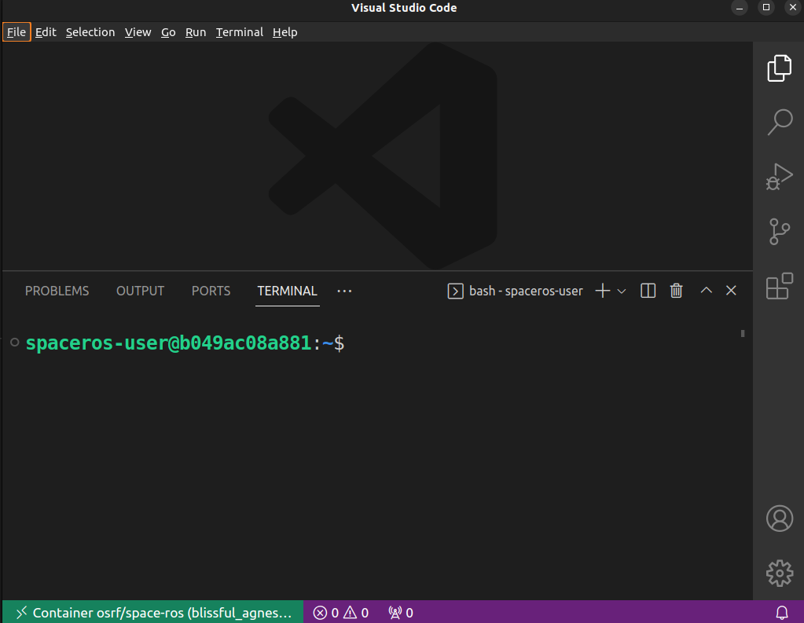

Using VSCode with the Space ROS Docker Images
Docker is a tool that allows you to run containers. Containers are similar to virtual machines in that they are useful for sharing reproducible software environments. However, containers are more light weight than virtual machines since they share the kernel of the host machine. In this How-To Guide, we’ll show you how to use VSCode and Docker to work with a Space ROS Docker image.
Table of Contents
Prerequisites
You’ll need to install the following software:
Starting a Docker Container
You can use your own Space ROS Docker image, or you can use a pre-built example Space ROS Docker image from Docker Hub.
docker run -it osrf/space-ros:latest
Note
Once you have the image pulled (happens automatically when you run the command above), you can use the VSCode Docker extension to start the container.

Connecting to the Docker Container with VSCode
Once the container is running, you can use the Remote Development VSCode extension to connect to the container. To do this, click the green button in the bottom left of VSCode. This button is a quick way to access the Remote Development VSCode extension.

And then select “Attach to Running Container…”

Alternatively, you can press ctrl/cmd + shift + p to bring up the command palette and then type “Attach to running container” and select the “Dev Containers” option.

From there, you should select the running Space ROS container by pressing the Enter key.
Note
Your container will most likely have a different name.

Once you select the container, a new VSCode window will open with the container’s filesystem mounted.
You can then install the Space ROS dashboard and begin analyzing your data.